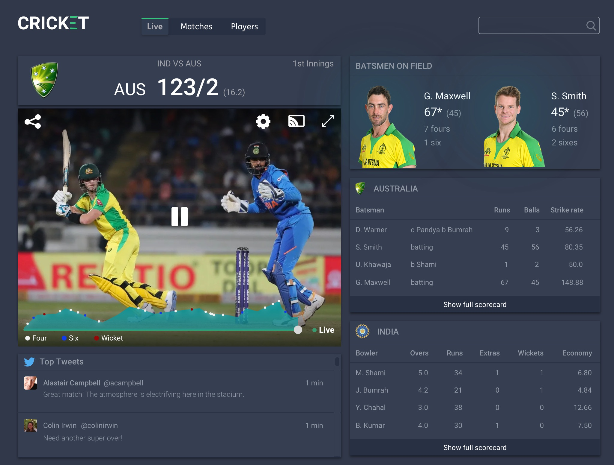
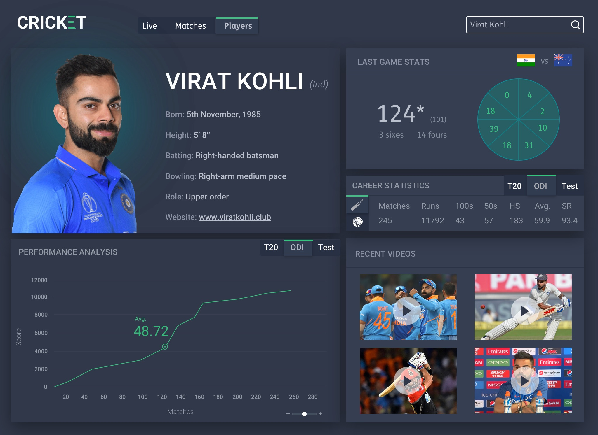
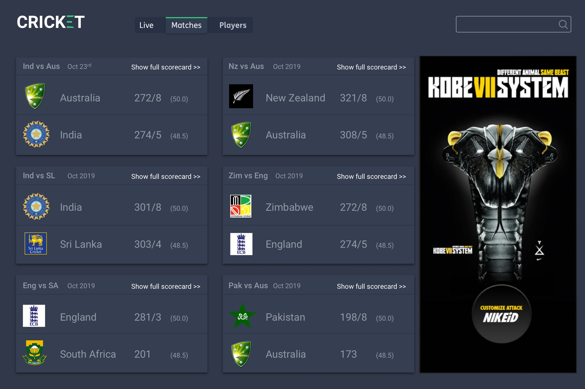

Cricket App
Cricket is a personal project that aims to redefine the meaning of live cricket streaming and reimagine the experiences that go with it. Cricket App enhances the live cricket match experience of the customer - ball by ball written and spoken commentary, match fixtures, lively interface, player statistics in all formats.
From IA & UX perspective, I devised a system of screens that displays vast amounts of live data with different levels of detail showing users only context driven information at each touchpoint.



Copyright 2023. Prasant Poodipeddi